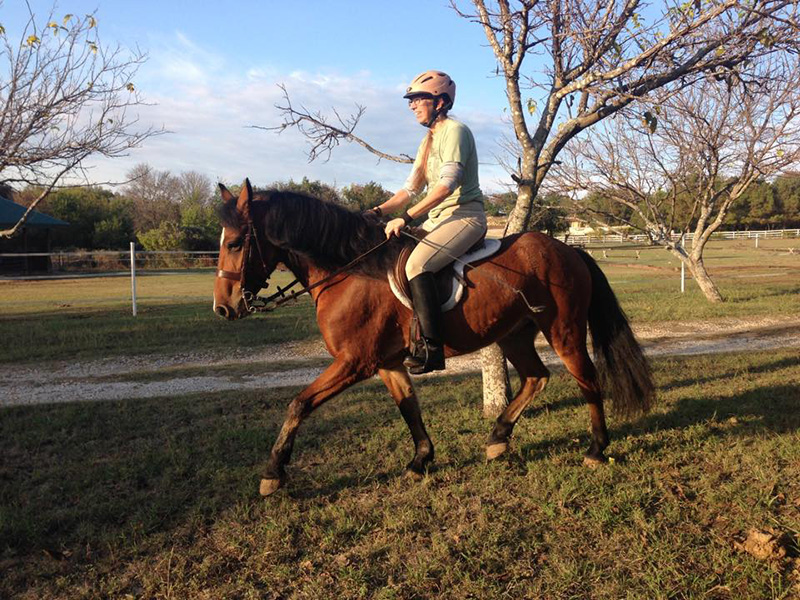
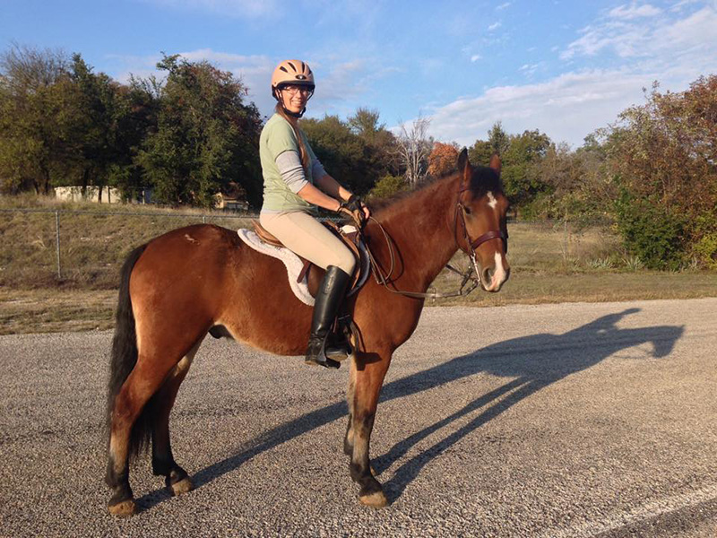
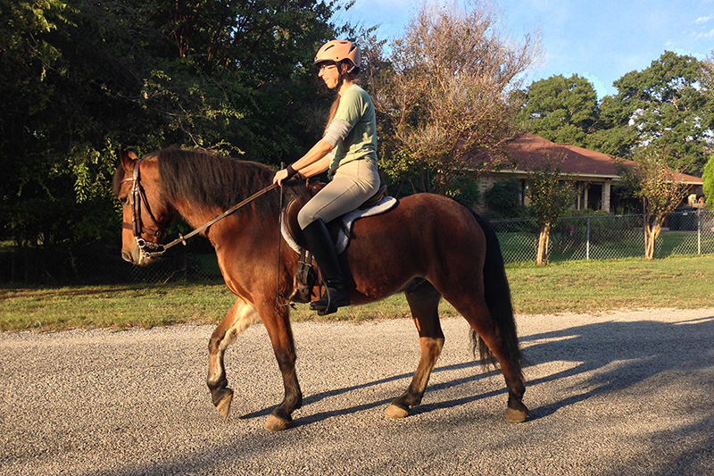
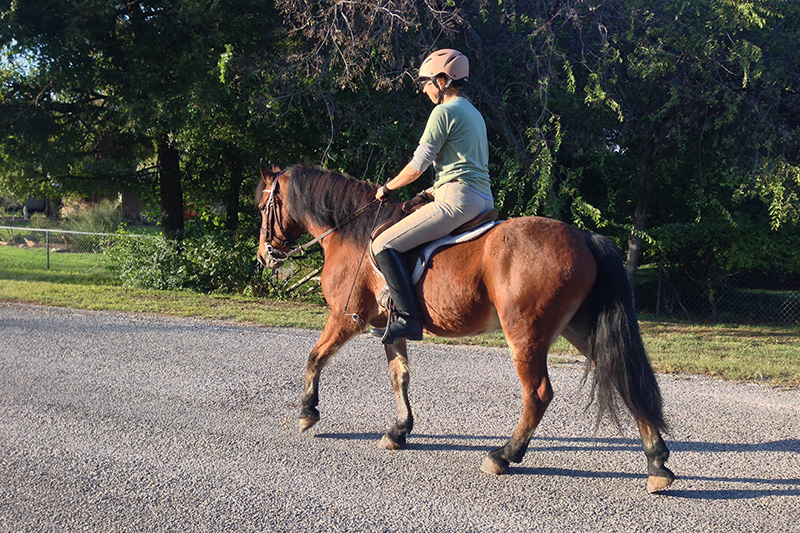
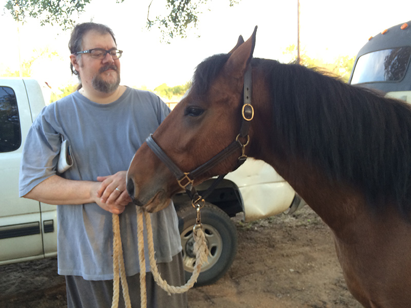

11/1/15 Riding
out on Topper
Topper's third day we had a little walk out on the road
with Bart. Topper was good about the barking dogs and
new things.

His
walk and trot are start and stop right now. He's getting used to my balance as I get used to his.

He's
nice about stopping and standing. His ears swivel but he stays still.

Heading toward home is a little more eager.

I had his shoes pulled but he seems ok on the road for now.

He's learning to trust Bart. It helps that he throws the evening hay.